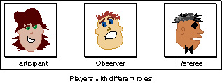
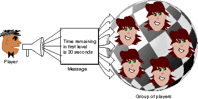
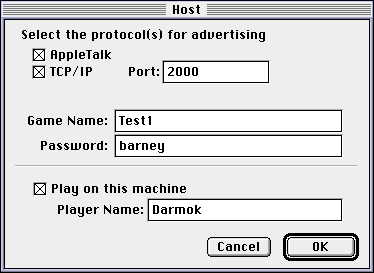
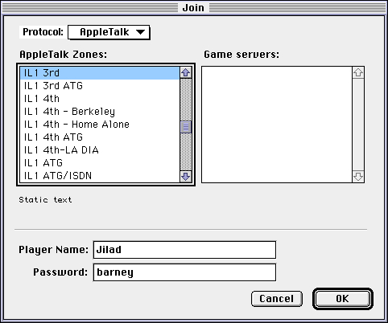
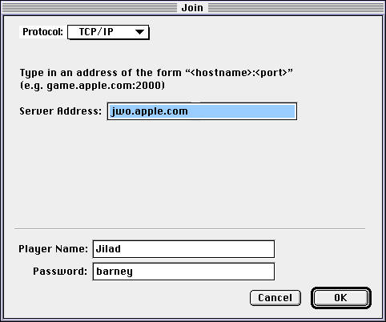

About NetSprocket
NetSprocket is the part of Apple Game Sprockets that provides networking capabilities in your application and is geared specifically for game developers.Unlike the standard networking API provided in Inside Macintosh for more traditional applications, NetSprocket provides you with the functions you need to network your game without worrying about endpoints, listeners, function callbacks, or other low-level networking details.
Using the NetSprocket functions you can set up and host your game, respond to incoming messages, and send messages to other players. NetSprocket handles delivery and receipt of all game messages without any additional effort on your part. NetSprocket is implemented as a shared library and provides an application programming interface (API) that focuses on players, groups, and messages.
Players, Groups and Messages
NetSprocket focuses on three distinct needs of game developers, organized just the way the game often is: by player, groups of players, and the messages that are sent and received in the course of a game.Players
A player in NetSprocket is any person using your game. The primary element of information about a player is his numerical identification, or ID. NetSprocket--and your game--uses this ID to track all of the information you acquire about a player during the course of a game, or even over the course of several games if you choose. This information might include real names, aliases, passwords, a game history, a score history, or any other information pertinent to the player.Anyone joining a game must be a player. However, a player may not actually be playing the game in the literal sense. Players often have different roles, as illustrated in Figure 4-1. For example, a player might be a judge or referee in a sports-style game. A player might also be a host, an observer, or even a spy.
Figure 4-1 Players in a game may have different roles

Groups
A group in NetSprocket is one or more players with a common theme. The primary element of information about a group is a numerical identification, or ID, just like a player. You use the group ID to manage the information you acquire about a group of players just as you do an individual player. This information might include team names, positions, scores, or other information pertinent to the group.A group is composed of players with a common theme. An obvious example is members of opposing teams, such as 5 players each in a basketball game, as shown in Figure 4-2. The referees might also be grouped together so you can send each of them a message easily. However, groups might not be static. In a search-and-rescue scenario, players may move from the lost group to the found group as your searchers locate survivors.
The primary purpose of groups is to allow you to send messages to a subset of the players in the game by sending one message to a group ID, rather than sending the message repeatedly, using the player ID for each member of the group.
Figure 4-2 Players are often in groups
Messages
Information travels among players and groups in the form of messages. In fact, messages are the only way players can communicate with each other. Messages can be sent from player to player (using the player ID) or from a player to a group of players (by using the group ID), as illustrated in Figure 4-3.Messages can contain any data type or data structure. Messages are often characters and numbers, but they might also be graphics, sound or other complex data structures.
Figure 4-3 Players use messages to communicate with each other

Key Features of NetSprocket
NetSprocket focuses on key features that dramatically reduce the effort required to wire your game. In fact, most of the work required to implement networking is already done for you, and provides features that your players will benefit from each time they play, including fault-tolerance, speed and human interface elements, to name a few.The following paragraphs describe in greater detail the capabilities provided by NetSprocket.
High Level Network Interface
NetSprocket provides a high level network interface to networking capabilities. This allows you to concentrate on creating the game itself, rather than the low-level details of complex networking issues. For example, a default human interface is provided for hosting a game or joining a game that is about to begin (or already in progress). Message routing is completely transparent to the application, and message delivery can be specified as guaranteed, or best-effort, depending on your needs. NetSprocket provides for dynamic addition and deletion of players and provides fault-tolerance as well.Multiple Protocol Support
The library supports both AppleTalk and TCP/IP and can support future protocols without requiring any changes to your game. The messaging model allows each player to choose a different protocol and still participate in a game. Using this protocol-independent model, you can host a multiplayer game on the Internet and allow players using AppleTalk or TCP/IP to join the game. Even though a player that has joined the game may be using different protocols, the game application hosting the session will route all messages correctly without burdening the game itself.Fault-tolerance
Fault-tolerance is a critical component of any network game architecture. If a player's game application crashes, or inexplicably disappears because of a network failure, NetSprocket will automatically alter its messaging tables and topology, recovering to the best of its ability without game intervention. While NetSprocket's ability to recover is dependent on many factors, it will make a best-effort approach to remedy the situation and inform the game host that a fault has occurred. The game host can then make a determination of whether to continue or halt the current game session.Client/Server Topology
NetSprocket version 1.0 uses the client/server topology for its game experiences, the most versatile and generally the most efficient architecture for this type of application. NetSprocket employs efficient messaging and data management techniques to make sure the message is delivered to its intended recipients as quickly as possible.Network Efficiency and Speed
Network efficiency and speed is a critical component of any game. The more time you spend sending and receiving messages, the less time you have to entertain your users by rendering scenes or updating the game world. The NetSprocket functions are written to quickly and efficiently process incoming and outgoing message, dispatching them to the network or the game as rapidly as possible.Human Interface Elements
NetSprocket also provides some human interface elements. You can use these default dialog boxes to speed prototyping or include them as part of the final product if they meet your requirements. NetSprocket provides dialog boxes for hosting a game and dialog boxes for joining a game about to begin or already in progress on the network.The dialog box for hosting a game allows the user to select which network protocols will be allowed in the game, as illustrated in Figure 4-4. Text edit fields are also provided for naming the game that is being hosted, along with the player's name. The user may also set a password required by anyone on the network interested in joining the game.
Figure 4-4 Modal dialog box for hosting a game

The dialog box for browsing an AppleTalk network and joining a game provides players with a browser, as shown in Figure 4-5. Using this dialog box, someone looking for a game server can browse the various zones, and select the game of his choice. Then, he can fill in his name and password and join the game.Figure 4-5 Dialog box for browsing and joining games on AppleTalk

The dialog box for joining a game on a TCP/IP network or a serial connection provides text edit fields for entering the address, as shown in Figure 4-6. When players join or leave a game in progress, NetSprocket will automatically update its routing information and inform each player of entering and departing players.Figure 4-6 Dialog box for joining a game on a TCP/IP network or serial connection

NetSprocket's human interface elements will continue to evolve and support more transport protocols over time, without requiring changes to your game. This means that your game may someday be played using a protocol or an online service that didn't even exist when your game was designed and written.